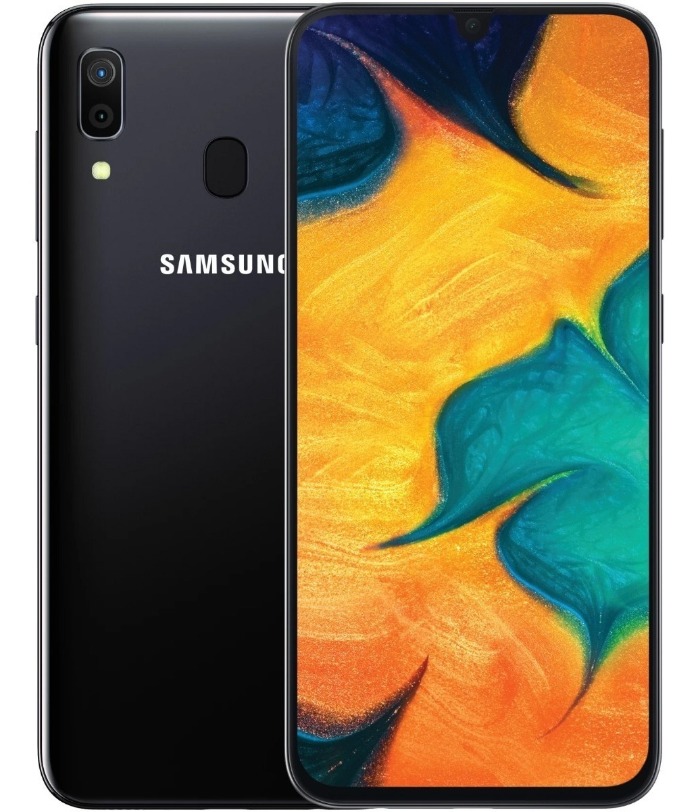
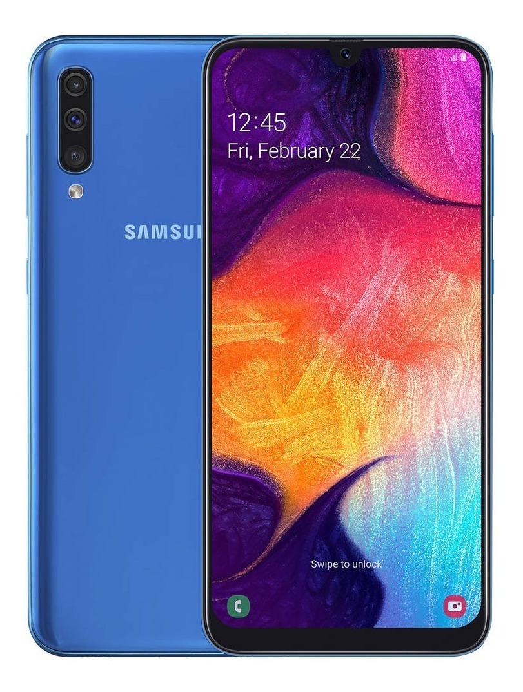
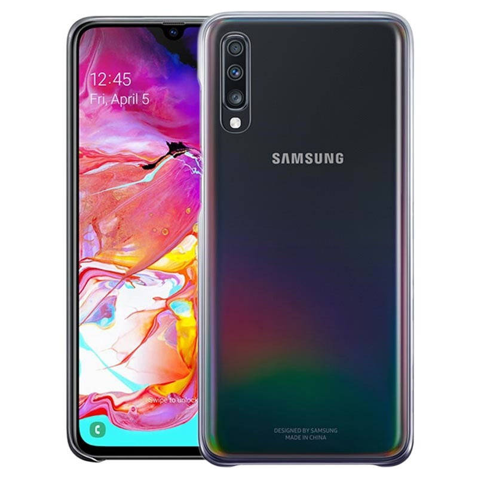

Galaxy A
samsung A20
Procesador Exynos 7884.
2 x 1,6 GHz.
6 x 1,35 GHz.
Memoria RAM: 3 GB.
Almacenamiento.
Interno: 32 GB.
MicroSD: si, hasta 512 GB.
Grafica: Mali-G71
Pantalla.
Tamano: 6.4 pulgadas Infinity-V.
Resolucion: 720 x 1560 pixeles.
Tecnologia Super AMOLED.
Camara trasera.
Resolucion: 13 + 5 Mpx con f/2.2.
Otros: LED Flash
Camara delantera.
Resolucion: 8 Mpx.
Apertura: f/2.0.
Conectividad: 4G/LTE, NFC, Bluetooth, WiFi, Samsung Pay
samsung A30
Pantalla: 6.4 pulgadas (Super AMOLED)
Resolucion: 2,340x1,080 pixeles.
Procesador: Exynos 7904.
RAM: 3GB, 4GB.
Almacenamiento: 64GB, 128GB.
Ranura microSD: si
Bateria: 4,000mAh.
Lector de huellas: Si, en pantalla.
samsung A50
Pantalla: 6.4 pulgadas (Super AMOLED)
Resolucion: 2,340x1,080 pixeles.
Procesador: Exynos 9610.
RAM: 4GB, 6GB.
Almacenamiento: 64GB, 128GB.
Ranura microSD: si
Bateria: 4,000mAh.
Lector de huellas: Si, en pantalla.
samsung A70
Pantalla: 6.7 pulgadas (Super AMOLED)
Resolucion: 2,400x1,080 pixeles.
Procesador: 8 nucleos (2x2.0GHz + 6x1.7GHz)
RAM: 6GB, 8GB.
Almacenamiento: 128GB.
Ranura microSD: Si
Bateria 4,500mAh.
Sistema operativo: Android Pie.